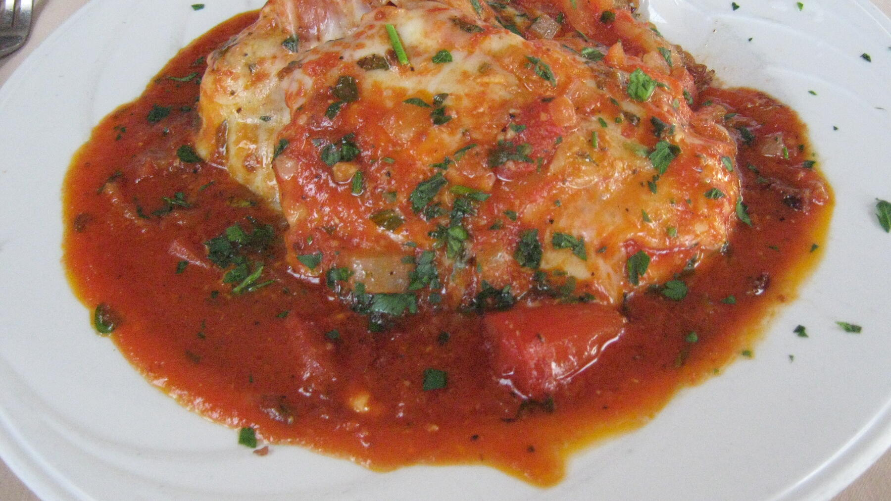

Zurück zur Übersicht
Mozzarella-Hähnchen in Basilikum-Sahnesauce
Angebratene Hähnchenbrust mit Cocktailtomaten in Basilikum-Sahnesauce, mit Mozzarella überbacken.
- Zeit
- 50 Min.
- Schwierigkeit
- mittel
- Kategorie
- Ofen
- Ernährung
- mit Fleisch
Zutaten
Portionen
- 4Hähnchenbrustfilets
- Salz und Pfeffer
- 1 ELÖl
- 250 gCocktailtomaten
- ½Topf Basilikum
- 200 gSahne
- 100 gSahneschmelzkäse
- Fett für die Form
- 125 gMozzarella
- Parmesan, optional
- 1 ELKräuterbutter, optional
Zubereitung
- Fleisch waschen, trocken tupfen und mit Salz und Pfeffer würzen. Öl in einer Pfanne erhitzen und die Filets darin von allen Seiten etwa 5 Minuten kräftig anbraten.
- Tomaten waschen und halbieren. Basilikumblätter abzupfen, waschen und fein hacken.
- Sahne in einem Topf aufkochen, den Schmelzkäse einrühren und schmelzen lassen. Mit Salz und Pfeffer würzen und zwei Drittel des Basilikums unterrühren.
- Fleisch und Tomaten in eine gefettete Auflaufform geben und die Sauce darübergießen. Mozzarella in kleine Stücke schneiden und auf dem Fleisch verteilen. Wer mag, streut noch geriebenen Parmesan darüber und setzt die Kräuterbutter in Flöckchen darauf.
- Im vorgeheizten Ofen bei 200 °C Ober-/Unterhitze (175 °C Umluft) etwa 30 Minuten backen. Mit dem restlichen Basilikum bestreuen.
Tipp: Dazu schmecken Kroketten oder Reis.